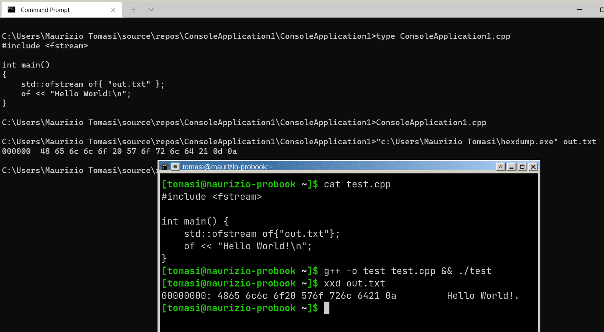
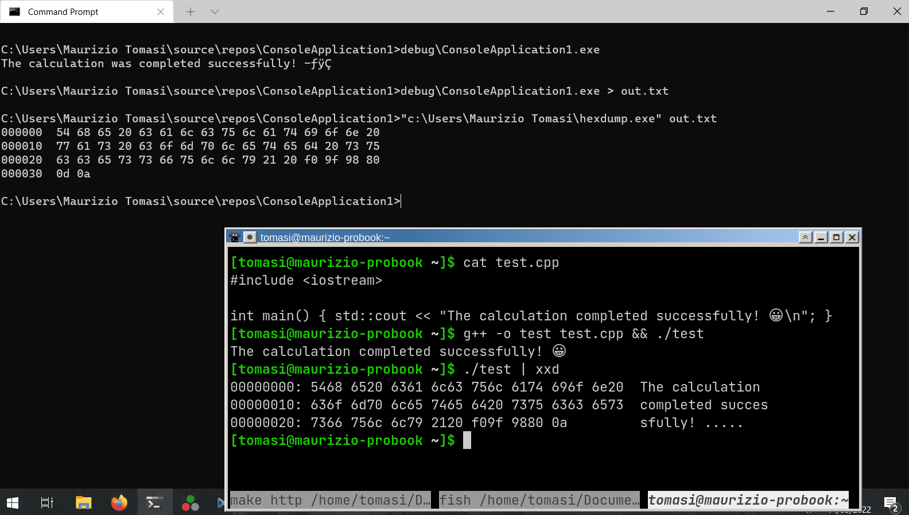
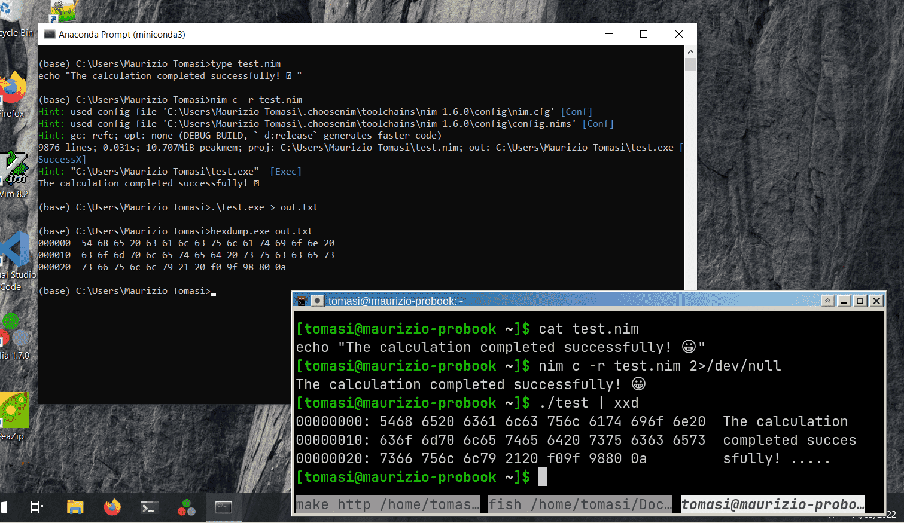
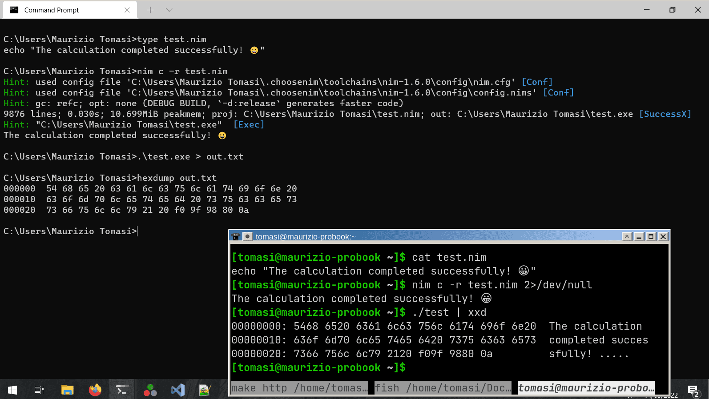
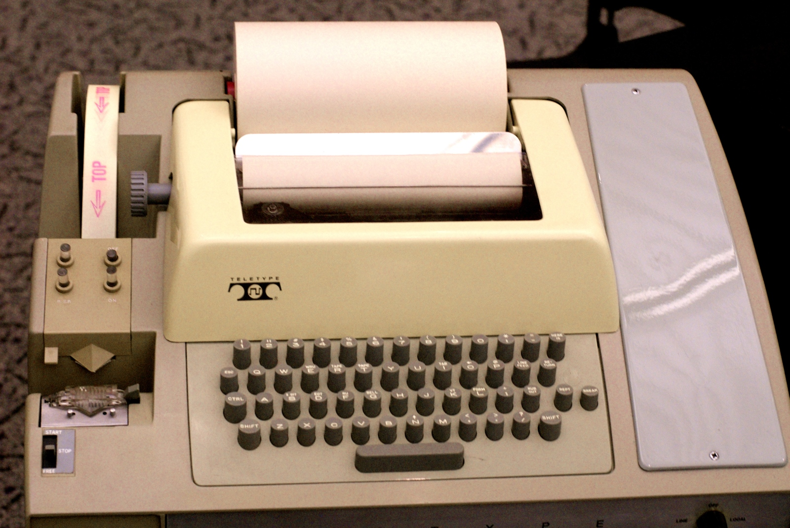
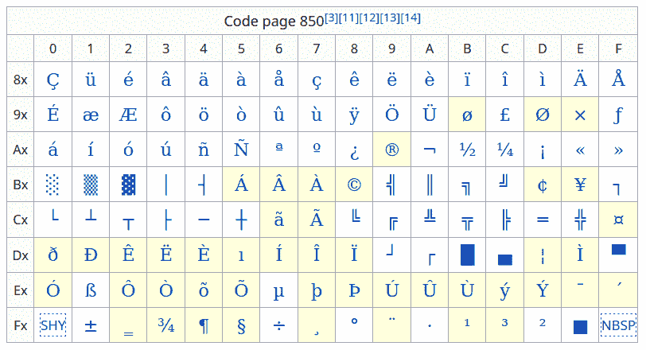
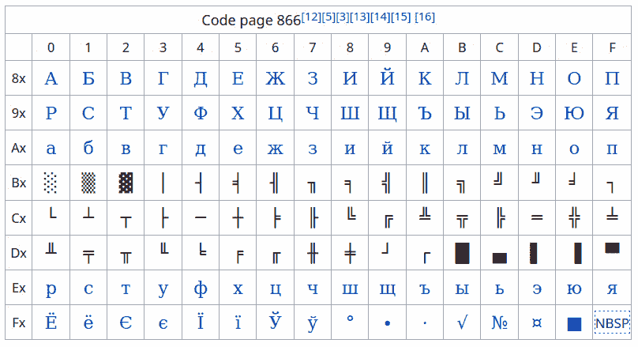
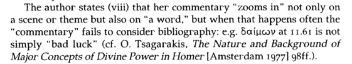
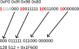
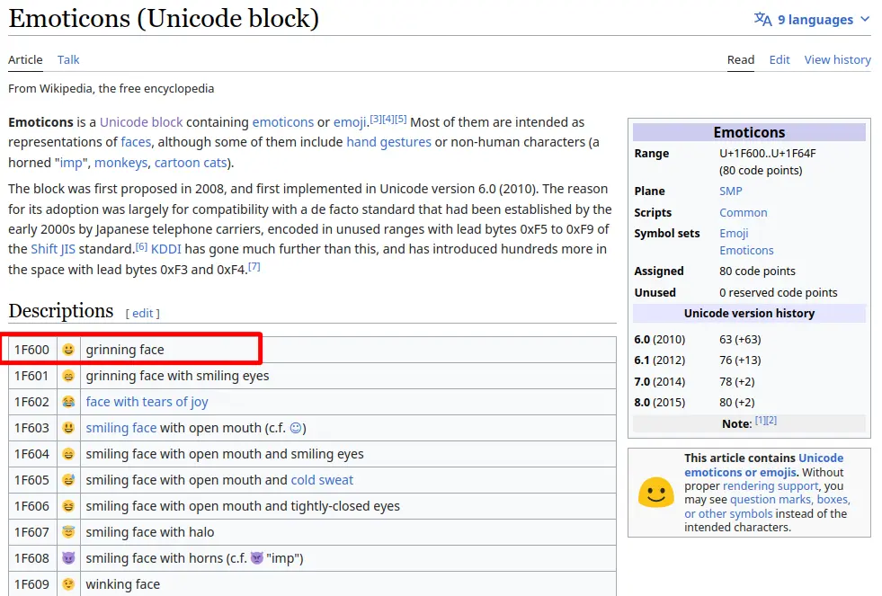

Calcolo numerico per la generazione di immagini fotorealistiche
Maurizio Tomasi maurizio.tomasi@unimi.it
HdrImage
type.Errors can be divided into two classes:
An error should be handled according to its type (first or second).
my_list = [5, 3, 8, 4, 1, 9]
sorted_list = my_sort_function(my_list)
# If any "assert", the program will crash and will print details
# about what the code was doing. If PDB support is turned on,
# a debugger will be fired automatically.
assert len(my_list) == len(sorted_list)
# The program continues
...assert and abort in C/C++).assert
vs doAssert
in Nim).$ python3 calc.py
Insert a number: 4
Insert another number: 3
The ratio 4.0 / 3.0 is 1.3333333333333333
$ python3 calc.py
Insert a number: 3
Insert another number: 0
Traceback (most recent call last):
File "calc.py", line 3, in <module>
print(f"The ratio {x} / {y} is {x / y}")
ZeroDivisionError: float division by zero
$(Note: Python raises an exception if you divide a number by zero.
Most of the languages return a NaN instead.)
$ python calc.py
Insert a number: 3
Insert another number: 0
Error, the second number cannot be zero!
Insert another number: 2
The ratio 3.0 / 2.0 is 1.5
$(There is still room for improvement: the program would crash if the
user enters pippo as input…)
main function of a program.The method Bisection::FindRoot() searches for the root
of a function within an interval [a, b], provided that
Weierstrass’ theorem holds.
| First case | Second case |
|---|---|
main function.An exception is used to «crash» a program in a controlled way:
Unlike functions like abort, the crash can be
suspended or interrupted (in jargon, «caught»), and the exception can
signal the type of error that caused its creation.
An exception is a type of crash that is
typed: ValueError,
ZeroDivisionError, etc.
def f(x, y):
return x / y
try:
x = float(input("Enter the first number:"))
y = float(input("Enter the second number:"))
print(f"The result of {x} / {y} is {x / y}")
except ZeroDivisionError:
print("Error! The value for y must be different than zero")
except ValueError:
print("Error! You must provide two floating-point numbers")Exception types can contain additional information
This is extremely useful when you want to know why an exception occurred:
An exception that is not caught propagates along the entire chain of callers.
It can be caught at any level:
Exceptions slow down programs because the compiler must insert “hidden” code to handle them (in-depth video)
Some languages (Rust, Go…) do not support them, in others they
can be disabled (noexcept
in C++, nothrow
in D…)
In the program we will develop we will use an efficient approach:
An additional parameter can be accepted to signal the error:
Instead of a bool, you can use a class to record the
type of error and complex information.
Languages like C# and Kotlin define the nullable type, which can be used with any type, and indicates its absence:
Check if the standard library of your language implements this
functionality (std::optional
in C++17, std::expected
in C++23, Option in
Nim…)
In Rust there is the Result type, which is a more
versatile version of nullable (like C++23’s std::expected).
The Result type is a sum type (we will see
them better later) that acts as type A in case of success
and type B in case of failure:
Binary files are the simplest type: they consist of a sequence of bytes (where each byte consists of 8 bits).
Each byte can contain an integer value in the range 0–255
To print the content of a binary file you can use the
xxd command (on Ubuntu, install it with
sudo apt install xxd):
$ xxd file.bin(On other operating systems you might have hexdump
instead of xxd).
Saving data in a binary file means writing a sequence of binary numbers to the hard disk, stored as bytes.
To interpret the values of bytes, binary numbering is used, which obviously uses the number 2 as its base:
0 → 0
1 → 1
2 → 10
3 → 11
4 → 100
…For a number dcba expressed in base B, its value is
\text{value} = a \times B^0 + b \times B^1 + c \times B^2 + d \times B^3.
Therefore, the binary value 100 corresponds to 0 \times 2^0 + 0 \times 2^1 + 1\times 2^2 =
4.
Binary notation, however, is cumbersome because numbers quickly require many digits (131 requires 8 bits in binary!).
As an alternative to binary notation, hexadecimal (base 16) notation is widely used, which uses the digits
0 1 2 3 4 5 6 7 8 9 A B C D E FHexadecimal notation requires 4 bits per digit, because 2^4 = 16. Since a byte is composed of 8 bits,
the value of a byte can always be encoded using only two hexadecimal
digits (0xFF = 255).
In C/C++/D/Nim/Rust/Julia/C#/Kotlin, hexadecimal numbers are
written with 0x, e.g., 0x1F67 = 8039 (in some
languages 0b introduces a binary number).
There’s always an underlying ambiguity in grouping bits into bytes, and it lies in their order.
If a byte is formed by the bit sequence 0011 0101,
there are two ways to interpret it:
\begin{aligned} 2^0 + 2^2 + 2^4 + 2^5 &= 53,\\ 2^2 + 2^3 + 2^5 + 2^7 &= 172. \end{aligned}
The order of bits in a byte is called bit-endianness, a term taken from Gulliver’s Travels (1726) by J. Swift:
Fortunately, bit endianness will not be something we have to worry about in our code, because the hardware abstracts it.
However, we will have to deal with byte endianness!
An 8-bit number can take values from 0 to 255.
That’s a very small range! But you can combine multiple bytes together.
In C++ there are the types int16_t (16 bits → 2
bytes), int32_t (32 bits → 4 bytes), int64_t
(64 bits → 8 bytes).
If you combine multiple bytes together, there’s the endianness problem again!
For example, the 16-bit hexadecimal number 1F3D (2 bytes) is
encoded with the byte pair 1F 3D (big-endian) or
3D 1F (little-endian)?
In this case too, we speak of big-endian or little-endian byte encoding. Intel and AMD CPUs used in personal computers today all use little-endian encoding. Big-endian encoding is instead the standard for network transmissions (and is still used today in some ARM CPUs).
Unlike bit endianness, we will have to worry about byte endianness when handling PFM files 🙁
In addition to the endianness problem, you also need to understand how your language handles binary files. Look at this C++ example:
#include <fstream>
int main() {
int x{138}; // 138 < 256, so the value fits in *one* byte
std::ofstream outf{"file.bin"};
outf << x; // Ouch! It writes *three* bytes: '1', '3', '8'
}The value 138 has been saved in textual form!
(To write it in binary form, you must use
outf.write().)
Let’s now see the secrets of text encoding.
The PFM format is composed of a textual part and a binary part
But you have already dealt with text files: they are your source codes!
Some of you may also have had error messages from Git regarding
strange CRLF character conversions
Let’s now see in detail the text encoding of files. This is useful for us because of two contexts:




Computer characters are encoded using numbers; the most common encoding is ASCII:
A is encoded by the number 65,
B by 66, C by 67, etc.;a is encoded by the number 97,
b by 98, etc.;0 is encoded by the number 48, 1
by 49, etc.Encoding a word like Casa means representing the
word with the sequence of values
67 97 115 97 = 0x43 0x61 0x73 0x61.
These numeric codes are part of the ASCII standard, which specifies 128 characters. (Here is the complete table, well explained).
The ASCII standard is very simple, yet sufficient for encoding texts:
Beauty - be not caused - It Is -
Chase it, and it ceases -
Chase it not, and it abides -
Overtake the Creases
In the Meadow - when the Wind
Runs his fingers thro' it -
Deity will see to it
That You never do it -
(Emily Dickinson, 1863)How is the end of a line encoded in each line of the poem?
Is it possible to encode all characters using 128 values?
The way to indicate a line break depends on the operating system!
On typewriters, there were two operations required to start a new line (see this YouTube video):
In ASCII encoding, there is a character for each of the two
commands, corresponding to 13 (carriage return,
also indicated as \r) and 10 (line
feed, indicated by \n). These were essential for
teletype terminals, and usually \r preceded
\n because it took longer to execute.

See this link for some history on this type of terminal.
Today, teletype terminals are no longer used, but \n
and \r are still in use.
The type of newline depends on the operating system used:
| Operating System | Encoding |
|---|---|
| MS-DOS, Windows | 13 10 (\r\n) |
| RISC OS | 10 13 (\n\r) |
| C64, macOS classic | 13 (\r) |
| Linux, Mac OS X | 10 (\n) |
Git expects the Linux format (\n) in files added
with git add
Even though ASCII was born for computers with 7 bits per byte, computer manufacturers soon standardized the use of 8-bit bytes (more convenient because it is a power of 2)
Since 2^8 = 256, this means that the numbers 128–255 are unused in ASCII: a waste!
To meet the needs of non-English speaking users, code pages were invented
A code page is a table of correspondences between numbers 128–255 and characters
Code page 850 (latin)

Code page 866 (cyrillic)

The C language implements the concept of “locale” through setlocale().
This is a global switch: it changes the locale
everywhere in the code, not just within the function where
setlocale() was called.
Apart from country locales (Italy, France, etc.), there is a
“special” locale called “C”, which is the most
basic and just follows the rules of the C language: no thousand
separator, a dot to separate the decimal part from the integer part, and
only ASCII letters (a…z) are considered by
functions like towupper().
Locales and code pages are probably one of C’s most spectacular failures.
If this command is executed on an MS-DOS system using code page 850:
c:\> echo è > file.txtthe first byte of the file would have the value 130, and
would be displayed correctly:
c:\> type file.txt
èHowever, copying the file to a computer with code page 866, you would get this:
c:\> type file.txt
ѓWe have seen that ASCII is a system centered on the writing system used in the USA, and does not include accented characters such as «è», «é», «ü», «â», etc.
The code page system soon showed its limits: how to write texts where multiple writing systems are required simultaneously?

In addition to accents on Latin letters, there are many other alphabets and symbols in the world, both contemporary (Greek, Cyrillic, Chinese, mathematical symbols, etc.) and ancient (Egyptian hieroglyphs, Akkadian cuneiform characters)
International standard born in 1991, which covers practically all the writing systems existing in the world today.
Today it is almost universally supported.
It is updated periodically (about once a year).
It supports both modern scripts (Latin, Cyrillic, Hebrew, Arabic…) and ancient ones (Egyptian hieroglyphs: 𓀃, Sumerian-Akkadian script: 𒀄)
It also has excellent support for mathematical characters (∞, ∈, ∀), emoticons (😀, 😉), musical symbols (♭, ♯, 𝄞), etc.
| Version | Date | Scripts | Characters |
|---|---|---|---|
| 1.0 | October 1991 | 24 | 7,129 |
| … | |||
| 15.0 | September 2022 | 161 | 149,186 |
| 15.1 | September 2023 | 161 | 149,813 |
| 16.0 | September 2024 | 168 | 154,998 |
| 17.0 | September 2025 | 172 | 159,801 |
A (65, same as ASCII!);à (224);É (201);… (8230);♭ (9837);😀 (128,512).Each Unicode character is associated with a number, called code point.
Characters can be combined
together, for example by joining a and ^
to form â.
The most common accented letters, however, have a dedicated encoding. These letters can therefore be encoded in multiple ways according to the Unicode standard. (This makes comparing two strings complicated!)
A grapheme is the result of a combination of one or more
code points. Therefore, the word così is composed of four
graphemes: c, o, s, and
ì (which can be the code point 236, or the
combination of the code points i and
`).
The combination of different characters is very important in certain scripts like Chinese.
The Unicode standard has many code points, and new ones are added with each version.
This poses a problem in encoding code points in files: ASCII used one byte per character because the set was limited. But for Unicode, how many bytes per code point should be used? One? Two? One hundred?
Historically, various encodings have been proposed for Unicode.
The most used today are the UTF (Unicode Transformation Format) encodings, which exist in three versions:
It is the most used encoding today (except under Windows 😢).
The number of bytes used for a code point varies from 1 to 4.
It is compatible with ASCII encoding: an ASCII file is automatically also a valid UTF-8 file.
It takes advantage of the fact that ASCII encoding uses only 7 of the 8 bits in a byte, and that the first 127 Unicode code points are the same as the ASCII values.
| Code point | Byte 1 | Byte 2 | Byte 3 | Byte 4 |
|---|---|---|---|---|
0x0000–0x007F |
0xxxxxxx |
— | — | — |
0x0080–0x07FF |
110xxxxx |
10xxxxxx |
— | — |
0x0800–0xFFFF |
1110xxxx |
10xxxxxx |
10xxxxxx |
— |
0x10000–0x10FFFF |
11110xxx |
10xxxxxx |
10xxxxxx |
10xxxxxx |


It works like UTF-8 encoding, but uses pairs of bytes (8 + 8 = 16).
A code point can be encoded by two or four bytes.
There is a problem of endianness here: is the value
0x2A6C written as the byte pair 0x2A 0x6C
(big endian) or 0x6C 0x2A (little
endian)?
In text files encoded with UTF-16, the so-called BOM
(byte-order marker) is inserted at the beginning of the file,
which corresponds to the code point 0xFEFF. If the
first two bytes of a file are 0xFE 0xFF, then the file uses
big endian; if they are 0xFF 0xFE, it uses
little endian. (UTF-8 also has a BOM:
0xEF 0xBB 0xBF, but it’s discouraged).
UTF-16 is used by Windows and in Java-based languages (Kotlin, Scala, etc.).
Obviously, it uses 32 bits per code point.
In this case, there is no ambiguity: each code point uses exactly four bytes.
It is obviously the most inefficient encoding in terms of space occupied: Emily Dickinson’s poem occupies 232 bytes in ASCII/UTF-8, but it would occupy 928 bytes in UTF-32 (four times as much!).
However, it is the simplest encoding: each code point always
occupies the space of a uint32_t type in C/C++.
What we discussed today explains why it is often more advantageous to use binary files instead of text files: it is much easier for a program to read and write them!
Almost all graphic formats used today (PNG, JPEG, GIF, etc.) are based on binary encodings.
However, text files have some significant advantages:
They are easier for a human to read and write;
They do not have endianness problems.
Furthermore, there is an important type of text file that you have already started using: your source code!
Almost all languages require keywords and symbols that are limited to ASCII characters (some also allow Unicode characters in variable and function names, such as Julia and Python)
However, in the slides shown earlier we saw that literal strings can also be inserted into programs:
How to ensure that the code is interpreted correctly?
Some languages impose an encoding (UTF-8 for Nim and Rust…), UTF-16 for C# and Java/Kotlin)
D supports everything: UTF-8, UTF-16, UTF-32, with any endianness
Python, in principle, allows any encoding, indicated by a comment at the beginning of the file:
C++’s relationship with Unicode is complicated!
clang uses UTF-8, GCC allows it from the command line
(-finput-charset=)…
But this only solves part of the problem because if the program prints a UTF-8 string, you must ensure that the system running the program recognizes UTF-8 (See the screenshots at the beginning of this section).
Pay attention to the encoding used by your editor; some editors allow you to specify the encoding in a comment at the beginning of the file (see the manual for Emacs and Vim)
All modern editors allow you to change the encoding of a file
From the command line, you can use the iconv
program
It is important to support Unicode in your programs, if they need to handle user-entered text (Spoiler: this is not the case for our ray-tracer, fortunately!)
To use Unicode, we must abandon some assumptions that we Italians (Americans/French/etc.) have ingrained
For example, there are letters based on the Latin alphabet that have a third form in addition to uppercase and lowercase
We don’t need to know Unicode so well in our lessons, but I recommend everyone to explore the topic further! Some references: The Absolute Minimum Every Software Developer Absolutely, Positively Must Know About Unicode and Character Sets (No Excuses!), Unicode programming, with examples